Values and control flow
Gregory S. DeLozier, PhD
Every evaluator result is now a pair.
exit and assert become keywords.
| Evaluation | Value | Status |
|---|---|---|
2 + 3 |
5 |
None |
2 > 3 |
False |
None |
print(5) |
None |
None |
exit(7) |
7 |
"exit" |
False is a normal result.

Check status before using the value.
| Source | Returned pair |
|---|---|
exit() |
(0, "exit") |
exit(2 + 3) |
(5, "exit") |
exit(exit(7)) |
(7, "exit") |
Parentheses required. Integer argument optional.
x = 3;
x = exit(7) + number(input());
print(x);No input. No addition. No assignment. No print.

Every arrow carries (7, "exit").
answer = 41;
assert answer == 42, "Expected 42";
print("This must not run");Assertion failed: Expected 42Report here. Return (1, "exit").

value, status = evaluate(ast, {})
if status == "exit":
sys.exit(value)
if status is not None:
raise ValueError(f"Unhandled status: {status}")Evaluation is testable without terminating the test process.
| Expression | Result |
|---|---|
false and exit(9) |
(False, None) |
true or exit(9) |
(True, None) |
true and exit(9) |
(9, "exit") |
type(exit(9)) |
(9, "exit") |
input() + exit(7) input is consumed
exit(7) + input() input is skippedBoth return (7, "exit").
result, env = evaluate_source("x=3;x=exit(7);x=99")
assert result == (7, "exit")
assert env["x"] == 3Exit exactly once. Later work never runs.
Why check status before storing an assignment?
Which structure should handle break?
What would recovery from assertion failure require?